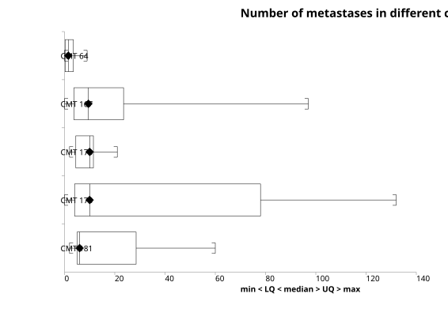
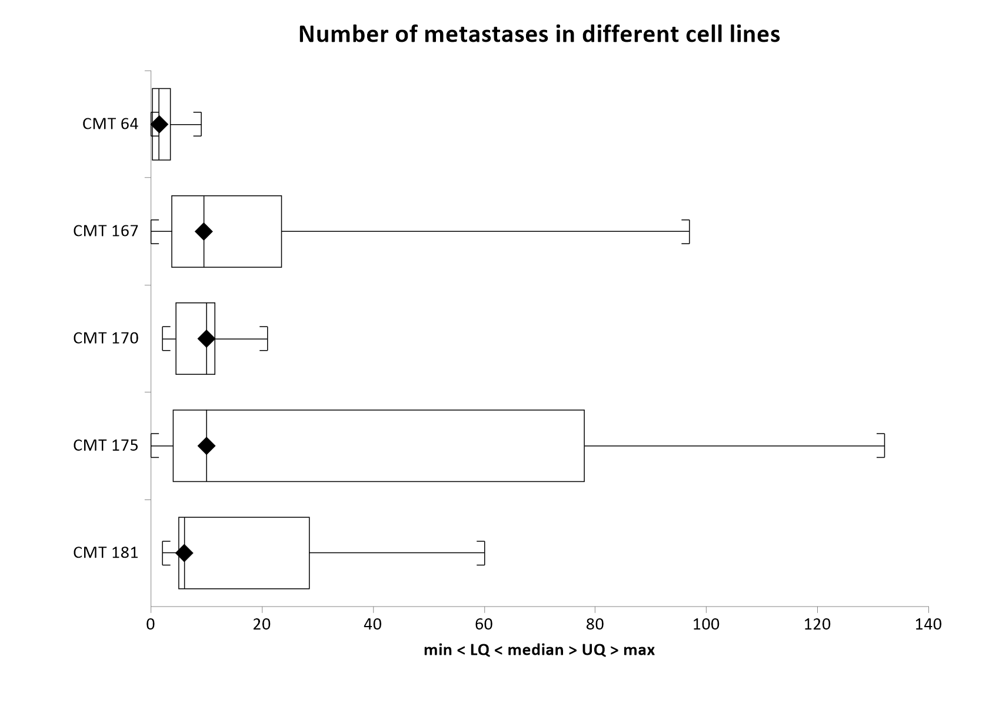

Menu location: Graphics_Box and Whisker.
Box and Whisker plots, described by Tukey (1977), give a pictorial representation of nonparametric descriptive statistics.
In nonparametric terms, the central "box" represents the distance between the first and third quartiles with the median between them marked with a diamond, with the minimum as the origin of the leading "whisker" and with the maximum as the limit of the trailing "whisker".
The quartiles are calculated by the conventional definition used in the descriptive statistics (centile type 2): with the data sorted into ascending order, the lower quartile is the (n+1)/4th value and the upper quartile the 3(n+1)/4th value, interpolating between neighbouring values when this is not a whole number. Note that some software plots the upper and lower hinges (the medians of the upper and lower halves of the data) rather than the quartiles; hinges can differ slightly from quartiles.
This convention can also be extended to parametric representation of data using the arithmetic mean bounded by one standard deviation or by its confidence interval. StatsDirect enables you to choose one of these two parametric schemes or the nonparametric scheme for each plot. See descriptive statistics for the formulae used.
This is a useful way to present data to an audience; it is often easier to convey the central location and spread of values pictorially than by quoting a list of descriptive statistics.
If you specify lower and upper gate values that lie between the limits of the box and within the range of the data then whiskers will be drawn as straight lines at the gate values and any data points outside those boundaries will be plotted as circles. This form of box and whisker plot is often used to represent outliers. If you check the fence option then gate values will be calculated automatically for each variable plotted. For the nonparametric plot, the fence values are defined as lower and upper quartiles minus and plus 1.5 times the interquartile range respectively. For the parametric plots, the fence values are defined as the mean plus and minus 2 standard deviations.


See also the Box and whisker plot (text).